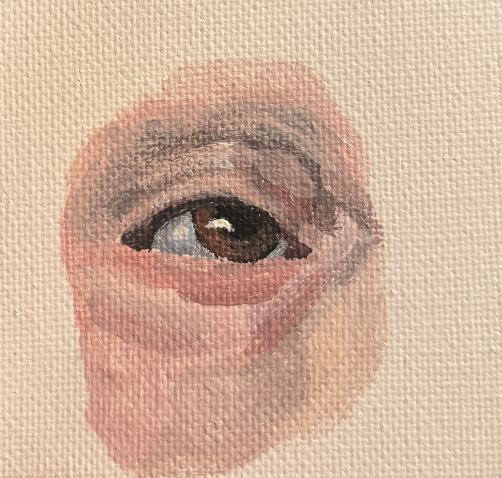
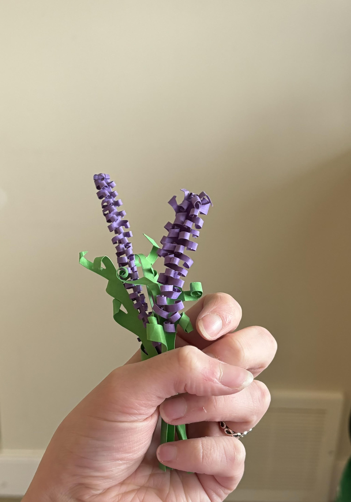

Who I Am
I'm a third-year Mechanical Engineering student at the University of Alberta, seeking an internship for Summer 2026. What I love most about engineering is the creative side of it — taking a problem, working through it, and eventually seeing something real come out the other end. At my internship with Diesel Tech Industries, I got to do exactly that: I designed 50+ SolidWorks models, fabrication drawings, and BOMs as part of a multidisciplinary team converting heavy-duty diesel engines to dual diesel-hydrogen fuel operation. It was the kind of hands-on, problem-solving work that reminded me why I chose this field. SolidWorks is something I've genuinely grown to love, and I'm looking for a role where I can keep developing those design skills on projects that matter.
Hobbies
My hobbies are drawing, painting, sculpting, waterskiing and playing musical instruments. I play 7 instruments: Harp, Piano, Flute, Ukulele, Guitar, Piccolo, and I sing. I've always enjoyed designing and coming up with creative solutions to problems and my dream is to combine that passion with my engineering work. You might have noticed on the home page some of the images were a little odd to include, but I included them because they're drawings that I made, well the trees and the balloon are drawings that I made.

